HANDBOOK
Benvenuto
tra i FRA!
Questo manuale ha l'obiettivo di accompagnarti e di guidarti nel tuo percorso quotidiano all'interno delle nostre pizzerie. Consideraci il Virgilio del tuo cammino agli inferi.
Troverai delle informazioni chiare e semplici per far parte del nostro team e saper sempre come essere un vero FRA!
MENU
- 1. Soddisfazione del cliente
- 2. Accoglienza telefonica
- 3. Cit. Aristotele
- 4. Regole d'oro del buon cameriere
- 5. Gestione lamentele
- 6. Divisa
- 7. Step of service
- 8. Tecniche di vendita - Up selling/Cross selling
- 9. Storytelling Prodotti/Fornitori
- 10. I nostri impasti
- 11. La nostra farina
- 12. I nostri fornitori
Siamo Fradiavolo, una catena di pizzerie giovane e ambiziosa, con un'impronta contemporanea,
che combina cinque tipologie di impasto, ingredienti di qualità e tanta passione.
Eat Pizza, Make Love è il nostro slogan.
Il format Fradiavolo nasce dalla volontà di destrutturare il processo produttivo tradizionale della pizza, con la convinzione che fosse possibile realizzare ciò in cui nessuno credeva: una pizza buona, sempre uguale, replicabile all'infinito e ovunque, e servita in un ambiente dalla forte personalità.
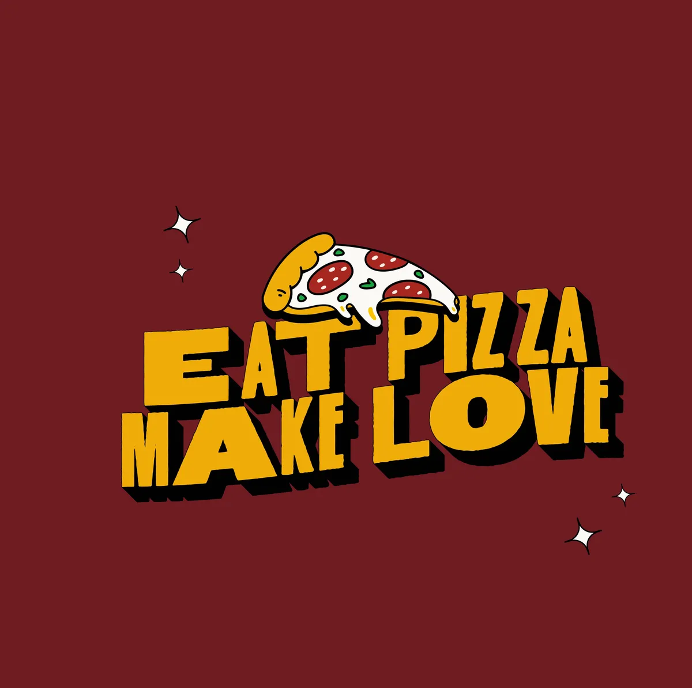
1.1
Storia del Brand
"A volte basta un saluto a cambiare la direzione delle cose, ed è proprio il caso della storia di Fradiavolo,
che inizia così:
'Buongiorno, signor D'Errico.'"
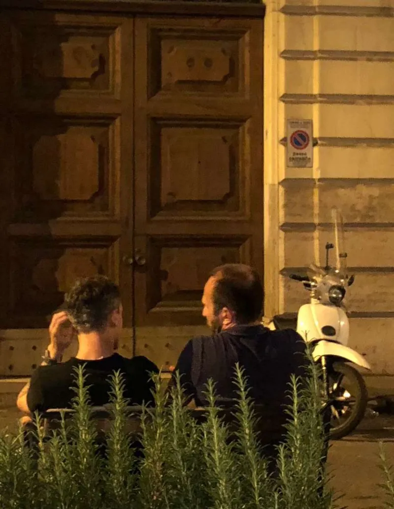
2018
Mauro D'Errico e Gianluca Lotta, all'epoca semplici conoscenti, rilevano una pizzeria a Genova. Fradiavolo esisteva già, ma aspettava una nuova occasione. Loro decidono di ripartire da lì, dando forma a un'idea che meritava di essere portata avanti.
2019
Vengono aperte 5 pizzerie. Fradiavolo inizia a prendere forma.
2020–2021
Viene messo a punto un nuovo modello produttivo nato dall'intuizione di destrutturare il processo produttivo tradizionale. Inca Srl entra come socio per sostenere l'espansione in Italia. Fradiavolo entra per la prima volta nella graduatoria '50 Top Pizza'.
2022
Ingresso in società di GESA e MIR Capital. Fradiavolo cresce: da 8 a 18 locali in tutta Italia, con l'apertura delle prime pizzerie a Roma e l'espansione accelerata nel nord del paese.
Aprile 2024
Alto Partners entra come socio di maggioranza per sostenere l'espansione in Italia e nel mondo.
Settembre 2024
Un nuovo traguardo: apertura del primo locale internazionale a Miami (USA).
2025
Siglato l'accordo con il gruppo GIRAUDI per aprire oltre 90 pizzerie in 10 anni in Francia. Inaugurata a novembre la prima pizzeria ad Antibes.
1.2
I Nostri Valori
01
Passione
Metterci passione così da non avere mai limiti nel migliorare la società.
02
Creatività e Innovazione
Creare e innovare sé stessi per arrivare a cambiare e migliorare l'intero team.
03
Organizzazione
Organizzarsi con i metodi più adatti e una disciplina che dia successo.
04
Rispetto e Fiducia
Un binomio che deve esistere nel gruppo, dall'inizio alla fine.
05
Trasparenza
Essere cristallini, onesti in ogni forma di comunicazione.
06
Spirito di Squadra
Non si accettano i fenomeni da copertina, ma si ama condividere le coppe.
07
Autocritica
Essere autocritici così da poter giudicare propositivamente.
08
Formazione
Essere consapevoli di essere in continua formazione, così come i propri colleghi. Nessuno è «completo». E se si sa, si condivide.
Capitolo 2
RISORSE
UMANE
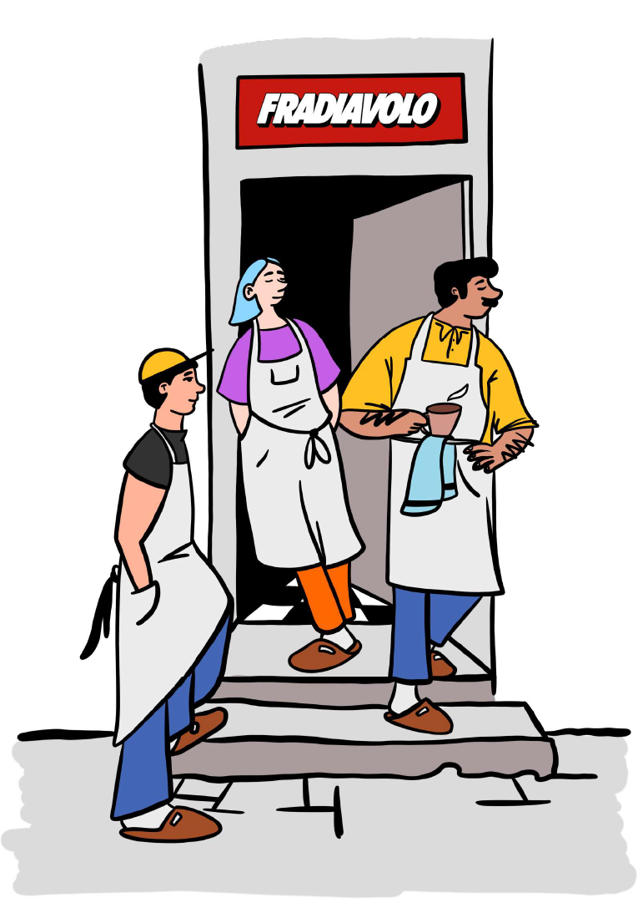
2.1
Organigramma
Pizzerie
Da Fradiavolo crediamo fermamente che qualità e voglia di imparare siano la chiave per un business di successo ed abbiamo molti esempi tra noi; con il tempo e ulteriore formazione siamo sicuri di potervi permettere un avanzamento di carriera nella nostra azienda.
Tanti nuovi punti vendita sono in apertura e l'azienda è in continua evoluzione, motivo per cui, le opportunità di carriera, sono frequenti.
Capitolo 3
SERVIZIO
"Vendiamo pizze,
dispensiamo sorrisi!"
Il cliente è la persona più importante della nostra giornata lavorativa, facciamoglielo capire!
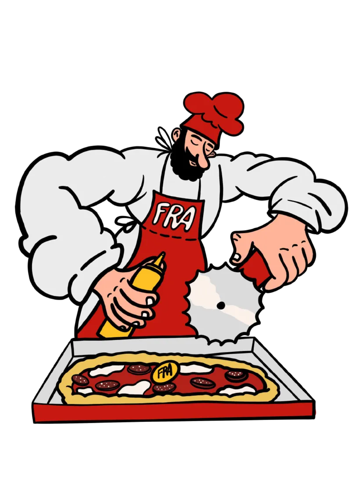
3.1
Soddisfazione
del cliente.
Accoglienza
L'accoglienza è il nostro colpo di fulmine: bastano pochi secondi, un sorriso, un saluto fatto nel modo giusto. In quel momento il cliente decide se si sentirà a casa o semplicemente "in una pizzeria".
Per questo l'accoglienza non è mai un dettaglio: è l'inizio dell'esperienza Fradiavolo.
"Buongiorno e benarrivati!"
Sorridi e saluta sempre il cliente all'arrivo. Fai sentire la voce.
Accoglienza
telefonica
L'accoglienza telefonica è il primo contatto tra il cliente e Fradiavolo: deve essere professionale, cordiale e rassicurante. Il tono di voce deve sempre trasmettere disponibilità, attenzione e sorriso — sì, si capisce anche al telefono se sorridi — anche se il locale è pieno.
01
Come rispondere al telefono
Formula standard Fradiavolo:
"Buongiorno/Buonasera Fradiavolo [nome PV], sono [nome], come posso esserle utile?"
02
Gestione della prenotazione
Quando il cliente chiede di prenotare, raccogli sempre tutte le informazioni necessarie:
- → Per che giorno desidera prenotare?
- → Per quante persone?
- → A che ora?
- → A nome di chi posso segnare la prenotazione?
- → Un recapito telefonico, per favore?
03
Conferma della prenotazione
Prima di chiudere la chiamata, ripetere sempre i dati per evitare errori:
"Perfetto, confermo: tavolo per 4 persone, sabato alle 20:30, a nome Rossi. Corretto?"
Ringraziare il cliente e salutare con cordialità:
"La ringraziamo, l'aspettiamo da Fradiavolo. Buona giornata/buona serata."
04
Gestione delle criticità più comuni
Locale pieno:
Non dire mai solo "siamo pieni", ma proponi alternative come orari o giorni diversi:
"Al momento non abbiamo disponibilità alle 19:00, ma posso proporle le 20:30 oppure le 22:00."
"Lascia i problemi personali fuori dal servizio. Il cliente non ha colpe."
— Cit. Aristotele
3.3
Regole d'oro
del buon cameriere
Sul tavolo, solo il necessario!
Se porti il caffè, l'amaro o il dolce, togli tutto ciò che non è necessario. Rimangono solo acqua e bevande.
Tecnica del camionista
Non fare mai viaggi a vuoto. Se sbarazzi un tavolo e porti i piatti al lavaggio, torna indietro con qualcosa di pulito. Farai un viaggio in meno dopo.
Conosci il cliente
Capisci chi hai di fronte, prevedi l'esigenza del cliente. Conosci il menù per essere sicuro di te e pronto a esaudire ogni curiosità.
Più attività in meno spostamenti
Più attività riesci a eseguire in un unico spostamento nel locale, meno dovrai muoverti e più sarai efficiente. E paradossalmente lavorerai anche meno.
Ordine e calma anche nel rush!
Può esserci il pienone, ma devi sembrare sempre in controllo: movimenti puliti, voce calma, niente corse isteriche.
3.4
Gestione
Lamentele
Presta molta attenzione ai feedback dei clienti, perché talvolta possono essere suggerimenti per farci crescere, altre volte critiche da gestire al momento.
Ricorda però sempre di riportare il feedback tempestivamente al tuo referente nel servizio per poterci permettere di risolvere le eventuali problematiche.
1 su 21
Per ogni persona che si lamenta, ce ne sono almeno 20 che non lo fanno.
8–10 persone
Una persona che ha avuto un problema in un ristorante ne parla con altre 8/10 persone di quanto accaduto.
Fonte: National Retail Merchants Association (USA)
3.1
Divisa
T-shirt e Felpa in dotazione pulita e stirata
Pantalone lungo nero pulito e stirato
Sneakers da tennis preferibili bianche e pulite
Capelli lunghi sempre legati
Un orologio, fede o piccoli orecchini sono permessi
Piercing facciali devono essere rimossi o coperti
Unghie sempre curate e pulite
Barba tenuta bene o corta/tagliata
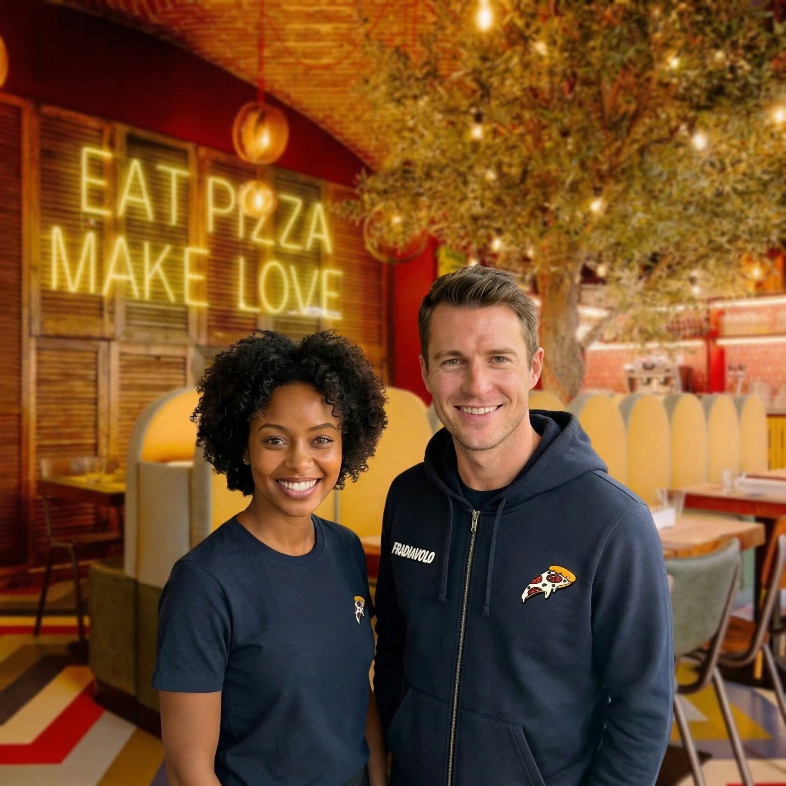
3.2
Step of Service
Accoglienza
Accogli con il saluto Fradiavolo.
Far accomodare
Chiedi se hanno prenotato. I primi clienti sempre in vetrina. Lascia sempre due opzioni, mai scelta libera. Se necessario, elimina il coperto di troppo.
Acqua
Appena accomodati, proponi sempre dell'acqua nell'attesa: "Posso portarvi dell'acqua nell'attesa?"
Presa dell'ordine
Entro 5 minuti. Proponi sempre antipasti e/o fritti. Rileggi la comanda prima di inviarla. Porta via scatolina e drink list.
Check e seconda bibita
A metà pasto, verifica il gradimento (domanda positiva: "Va tutto bene?", non "Come sta andando?"). Proponi un secondo giro di bibite. Qualsiasi problema, segnala subito al responsabile.
Sbarazzare
Attendi che tutti i commensali abbiano finito. Rimuovi i piatti in maniera ordinata, fai due giri se serve. Usa sempre il vassoio per le bibite.
Dolci, caffè, amari
Entro 5 minuti. Proponi sempre al tavolo.
Arrivederci
Sorridi e ringrazia il cliente. Se l'esperienza è stata positiva, in cassa chiedi se ha piacere di lasciare una recensione su Google.
Se possibile, chiedere se è la prima visita del cliente, e in caso affermativo presentare il format concentrandosi su tipologie di impasti.
3.4
Tecniche di vendita
Up Selling · Cross Selling
Non proporre mai al cliente domande a risposta chiusa: "Sì" o "No". Proponi sempre una scelta tra due alternative.
"Vuole un dolce?"
"Per concludere, preferite il nostro tiramisù artigianale o la cheesecake basca?"
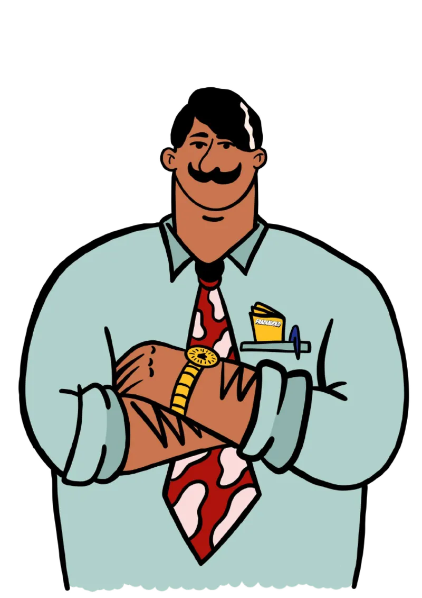
Up-Selling
Definizione: Suggerire un'opzione migliore, più costosa o "upgradata" rispetto a quella che il cliente stava considerando.
Esempio:
- "Invece della pizza Margherita, provi la nostra Pepperoni, è un'esperienza diversa!"
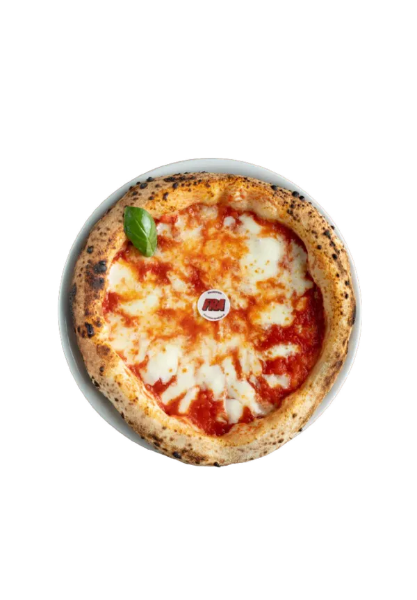
Margherita
€ 8,5
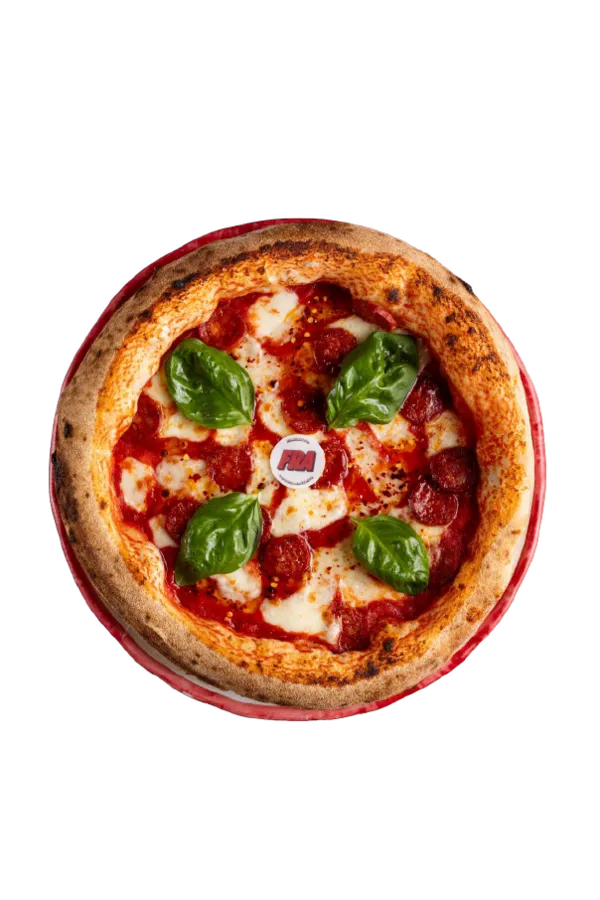
Pepperoni
€ 13,5
Cross-Selling
Definizione: Proporre prodotti correlati o complementari a ciò che il cliente ha già scelto.
Esempi:
- "Per accompagnare la sua pizza, le consiglio una birra artigianale Baladin che si abbina perfettamente."
- "Prima della pizza, le andrebbe una porzione delle nostre patatine fritte o un antipasto di supplì?"
- "Per concludere, abbiamo dei dolci fatti in casa, le va un tiramisù?"
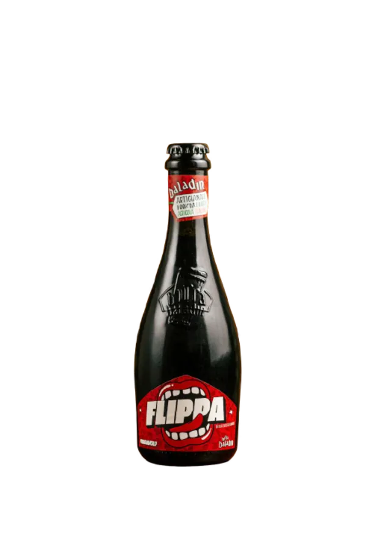
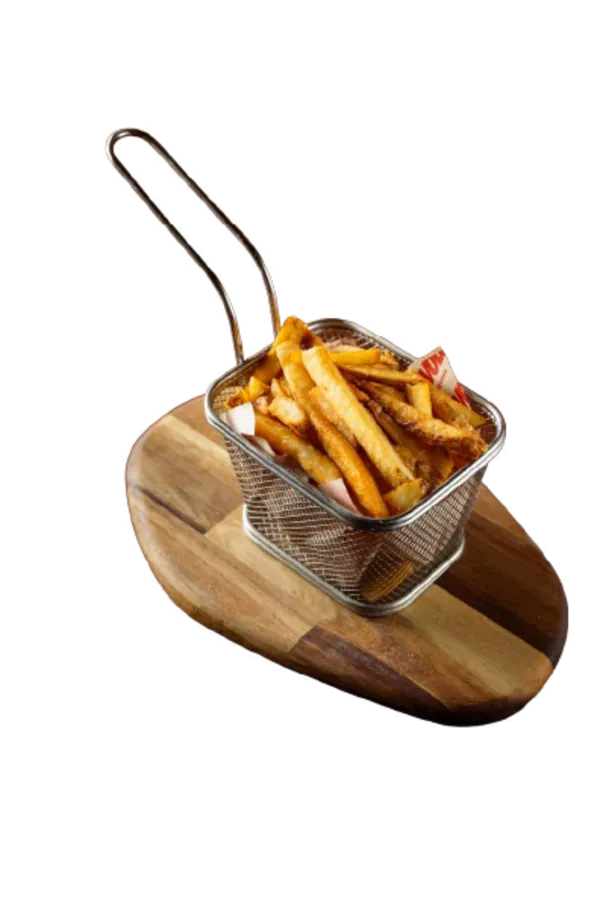
Come applicarle efficacemente
Conosci il cliente
Suggerisci in base ai gusti e alle esigenze specifiche.
Crea valore
Fai percepire il beneficio dell'offerta, non solo il costo.
Sii discreto
Non essere troppo insistente. L'obiettivo è migliorare l'esperienza, non spingere la vendita.
3.5
Storytelling
Prodotti &
Fornitori
Lo storytelling nella ristorazione è l'arte di trasformare cibo, ingredienti e ambiente in una narrazione emozionale, capace di creare connessioni profonde con i clienti e differenziare il brand.
Raccontare l'origine, la tradizione, la passione delle persone e i valori del territorio trasforma il semplice pasto in un'esperienza memorabile e fidelizzante.
Approfondimenti
Contenuti in aggiornamento
1.3
I Nostri Impasti
Da sempre uno dei nostri fattori differenzianti è la possibilità di mangiare la pizza come più ti piace. Fin dall'inizio abbiamo offerto tre impasti — Classico, Integrale e Nero al carbone vegetale — combinabili con tutte le nostre pizze.
Poi abbiamo introdotto l'impasto Senza Frumento, realizzato con farine naturalmente prive di glutine (non adatto a chi soffre di celiachia, per possibile contaminazione in cucina). E da pochissimo è arrivata una nuova rivoluzione: l'impasto Sottile — Romano nei locali di Roma — dal bordo basso, croccante e leggerissimo, per chi vuole tutta la pizza e niente di superfluo.
Cinque impasti, una direzione chiara: essere il posto in cui ogni desiderio può essere esaudito, dove un tavolo con gusti diversi può andare d'accordo.
Tutti i nostri impasti nascono da una lievitazione naturale e dalla selezione accurata delle farine — in particolare quelle di Molino Bongiovanni — per garantire alta digeribilità e un gusto che non cambia mai da un locale all'altro.
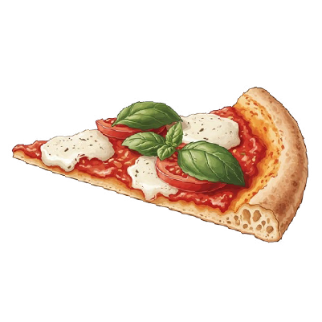
Classico
La base di tutto. Farina di grano tenero lavorata con cura: soffice, profumata, con un cornicione che non si butta — è la nostra firma.
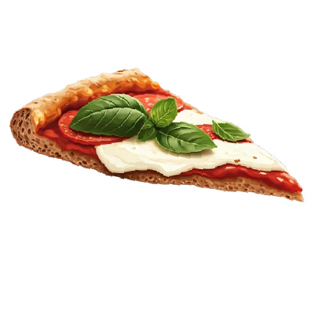
Integrale
Una miscela di farina integrale, semi di lino, crusca e avena. Più sostanziosa, più carattere, senza rinunciare alla leggerezza.
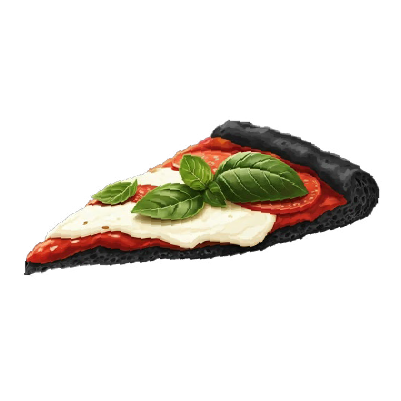
Nero
Con carbone vegetale attivo: leggero, digeribile, visivamente diverso da tutto. Un impasto che fa conversazione ancora prima del primo morso.

Senza Frumento
Naturalmente senza glutine. Perché la pizza è per tutti — senza compromessi sul gusto.
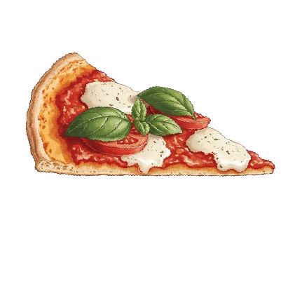
Sottile
Croccante, leggero, diretto. Per chi vuole tutta la pizza e niente di superfluo. Disponibile in locali selezionati.
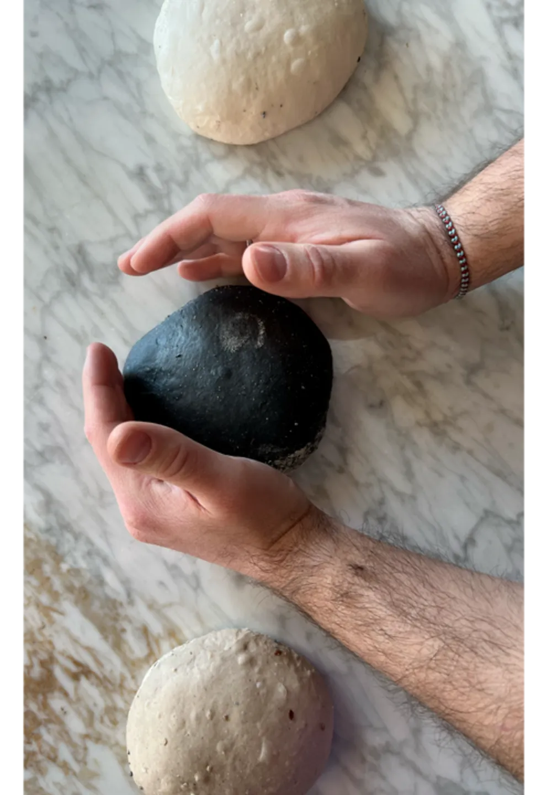
1.3b
La Nostra Farina
Dietro ogni impasto Fradiavolo c'è una scelta precisa: il Grano Bologna, una delle varietà di frumento tenero più pregiate d'Italia. È un grano di forza, coltivato in tutta la penisola, noto per la sua stabilità e le sue eccellenti proprietà tecnologiche. Se un cliente ti chiede "ma che farina usate?", questa è la risposta che fa la differenza.
Dal Grano Bologna ricaviamo una farina Tipo 1 — non la classica "00" che si trova ovunque. La Tipo 1 è meno raffinata: conserva una parte maggiore di crusca e germe di grano, risultando più scura, più profumata e con un aroma intenso di grano tostato. È la scelta ideale per chi cerca un equilibrio tra gusto, salute e performance dell'impasto.
Perché questa combinazione funziona così bene? Il Grano Bologna è un frumento di forza con un alto contenuto proteico (13–15%), capace di sostenere lunghe lievitazioni di 24–48 ore mantenendo la struttura dell'impasto stabile. La farina Tipo 1, grazie alle fibre, assorbe più acqua — e l'idratazione è una componente fondamentale dei nostri impasti — garantendo una pizza più morbida, digeribile e che dura nel tempo.
In più, la fibra alimentare riduce l'indice glicemico rispetto alle farine raffinate, ed è più ricca di sali minerali come potassio, fosforo e magnesio. Non è solo una pizza buona — è una pizza pensata bene.
Quando racconti la nostra pizza, parti da qui: non usiamo una farina qualsiasi, usiamo una farina che nasce da un grano selezionato, lavorata il meno possibile per conservare tutto il suo carattere.
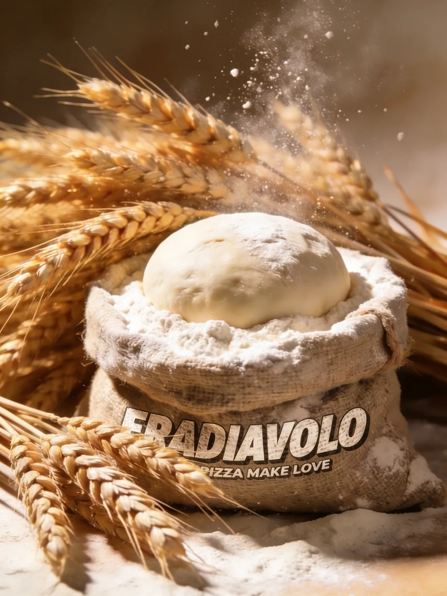
1.3c
I Nostri Fornitori
Ogni ingrediente che arriva nelle nostre pizzerie ha un nome, una storia e un perché. Non scegliamo fornitori: scegliamo partner che condividono la nostra ossessione per la qualità. Conoscerli significa saper raccontare al cliente cosa c'è davvero nel piatto — e fare la differenza tra servire una pizza e regalare un'esperienza.
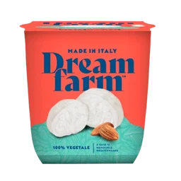
Dreamfarm
Mozzarella Vegetale
Dreamfarm è una startup di Parma, nel cuore della Food Valley italiana, che produce una mozzarella 100% vegetale a base di mandorla fermentata. Ingredienti minimi, gusto sorprendente. Da Fradiavolo, qualsiasi pizza del menu può essere resa vegana sostituendo la mozzarella tradizionale con Dreamfarm — così nessuno resta escluso.
Attenzione: contiene mandorle (frutta a guscio). Non adatta a chi è allergico alla frutta secca.
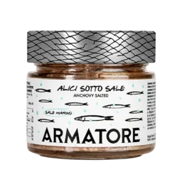
Armatore
Alici di Cetara
Le alici di Cetara sono una delle eccellenze della Costiera Amalfitana, lavorate ancora secondo la tradizione secolare dei pescatori locali. Armatore le seleziona e le conserva sott'olio, rispettando tempi di maturazione lunghi che regalano un sapore intenso, profondo e inconfondibile. Quando il cliente assaggia un'alice sulla pizza, sta assaggiando il mare di Cetara.
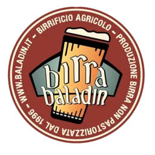
Baladin
Birre Artigianali
Birrificio agricolo piemontese dal 1996, Baladin produce birre artigianali con ingredienti 100% italiani, dalle materie prime coltivate direttamente nei propri campi all'acqua delle Alpi Marittime. Per Fradiavolo ha creato la IPA "Flippa", una birra esclusiva pensata per accompagnare le nostre pizze: fresca, luppolata, che lascia il palato pulito e pronto per il morso successivo.
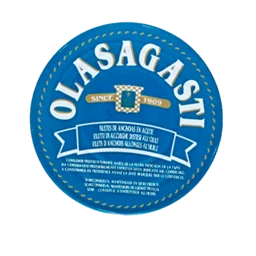
Olasagasti
Tonno
Eccellenza basca dal 1899, Olasagasti seleziona tonno intero — mai frammentato — pescato nelle acque del Cantabrico e conservato in olio extravergine d'oliva biologico. Ogni pezzo è lavorato a mano, generazione dopo generazione. È il tonno che trovi nelle nostre insalate e nei piatti speciali: un ingrediente che non ha bisogno di essere nascosto, perché si fa riconoscere.
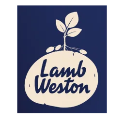
Lamb Weston
Patatine Fritte
Leader mondiale nelle patatine fritte, Lamb Weston garantisce un prodotto costante, croccante e dalla resa perfetta. Le nostre patatine non sono un contorno qualsiasi — sono uno degli antipasti più ordinati e uno strumento di cross-selling fondamentale. Proponile sempre.
La Sorrentina
Mozzarella Fiordilatte
La mozzarella fiordilatte è il cuore di ogni nostra pizza. Latteria La Sorrentina la produce nella tradizione campana con latte 100% italiano, garantendo un prodotto fresco, filante e dal gusto delicato che si fonde perfettamente con i nostri impasti. È la base su cui costruiamo tutto il resto.
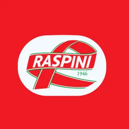
Raspini
Salumi
Tutti i salumi delle nostre pizze sono Raspini. Il Prosciutto Cotto lo trovi nella Prosciutto Cotto, nella Capricciosa e nella Torna Pesto. La Spianata Piccante ricetta Fradiavolo è creata su misura per noi ed è l'ingrediente che dà carattere alla Fradiavolo e alla Fradiavolissima. Un unico fornitore, una qualità costante.
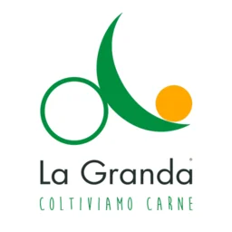
La Granda
Salamino, Polpette & Wurstel
La Granda è un'eccellenza piemontese che trasforma carni di razza bovina Piemontese allevata nel rispetto dell'animale e del territorio. Il Salamino Piccante La Granda è protagonista della Pepperoni e della Fradiavolissima. Le polpette e i wurstel arrivano dalla stessa filiera — ingredienti minimi, senza conservanti, gusto autentico.
Presidio Slow Food: significa che La Granda rispetta un disciplinare rigoroso su allevamento, alimentazione e benessere animale, certificato dalla fondazione Slow Food. Non è un marchio commerciale — è una garanzia di etica e qualità.
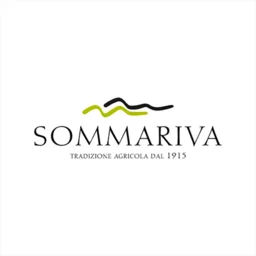
Sommariva
Olio EVO
L'olio extravergine d'oliva dell'Azienda Agricola Ligure Sommariva è l'olio che utilizziamo nelle nostre pizzerie. Un olio dal profumo delicato e dal gusto equilibrato, prodotto in Liguria seguendo metodi tradizionali. È l'ingrediente silenzioso che lega tutto insieme — e che il cliente nota quando c'è qualità.
Fontanafredda
Vini
Fondata nel 1858 nelle Langhe piemontesi, Fontanafredda è una delle cantine storiche d'Italia. Da Fradiavolo trovi il Nebbiolo e l'Alta Langa — due espressioni diverse dello stesso territorio, perfette per accompagnare le nostre pizze. Quando proponi un vino al tavolo, stai proponendo una storia che parte dalle colline del Piemonte.
Lavazza
Caffè
Il caffè che chiude l'esperienza Fradiavolo è Lavazza — eccellenza torinese dal 1895. Un espresso fatto bene è l'ultimo ricordo che il cliente porta con sé. Proponilo sempre a fine pasto, insieme a dolci e amari.
1.4
I Nostri Locali
Una pizzeria Fradiavolo non è solo un posto dove si va a mangiare — è un luogo dove si sceglie di passare del tempo. Ogni locale è pensato per essere vissuto: un ambiente con personalità, dove sedersi e sentirsi a casa, dove tornare non solo per la pizza ma per come ci si sente dentro.
L'interior design è guidato dal riuso creativo: arredi recuperati, insegne d'epoca, materiali reinterpretati che raccontano storie. Dylan Dog sulle pareti, pavimenti a chevron bicolore, armadi vintage, il neon "Eat Pizza, Make Love". Niente è scelto a caso — e niente è uguale a un altro locale.
Eppure, ogni pizzeria Fradiavolo è immediatamente riconoscibile. Tutte diverse, tutte Fradiavolo: la stessa impronta, lo stesso approccio al riuso, la stessa cura per il dettaglio. Cambia la città, cambia l'arredamento, ma l'anima è sempre quella.
"Nulla si butta, tutto si trasforma."
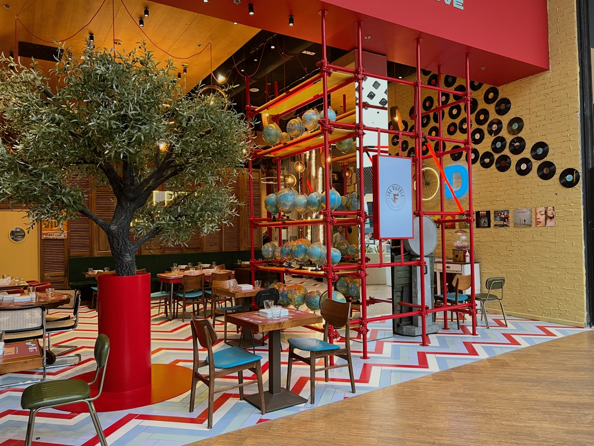
Dettagli vintage
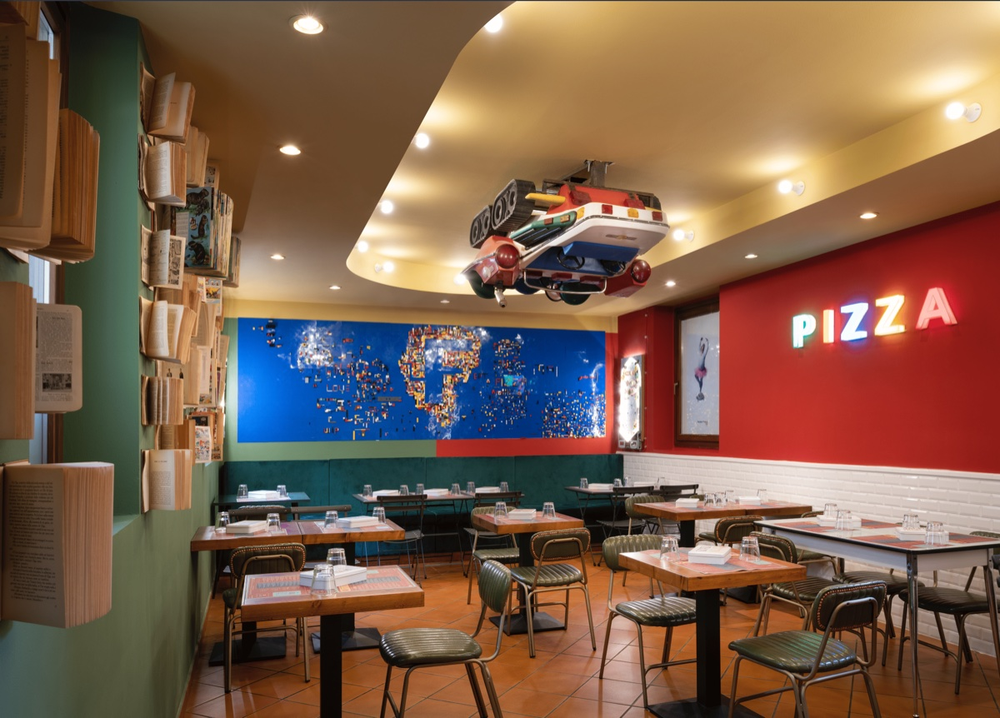
Milano Isola
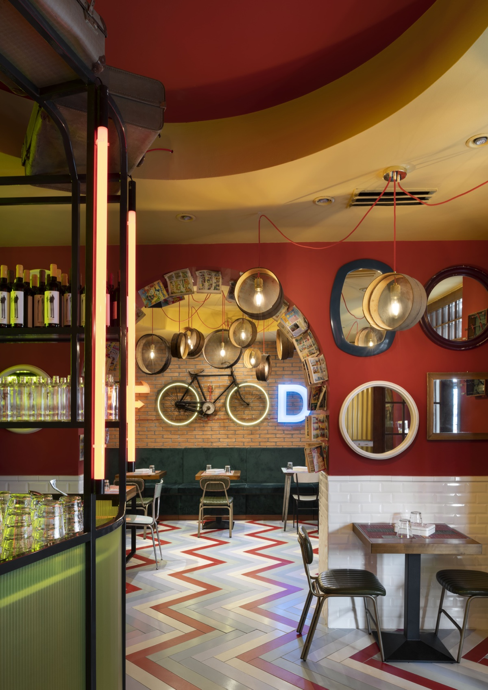
Milano Isola
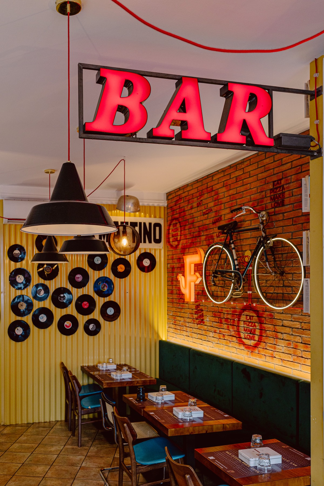
Torino
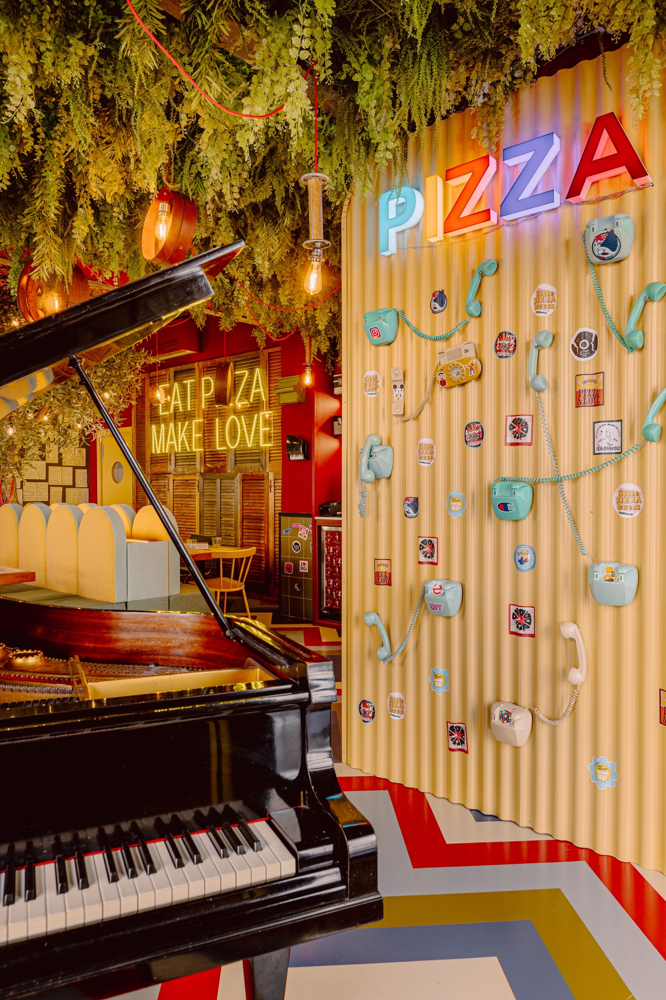
Torino
Manifesto
F
sta per
pizza, creatività, processo, sapori, coraggio,
rischio, amore, idee, cambiamento, stile.
F
sta per Fradiavolo.
E tiene insieme ciò che siamo, contrasti inclusi.
Anche quando non la leggi, la F è ovunque: nei nostri arredi, nel cornicione che non si butta, nelle insegne che hanno avuto una vita prima di essere nostre, e nelle nostre insegne a cui abbiamo dato una seconda vita, e poi ancora, nell'Eat Pizza, Make Love.
Nel modo in cui abbiamo saputo cambiare prospettiva, restando fedeli ai sapori originali.
F sta per tutto quello
che rende Fradiavolo,
Fradiavolo.